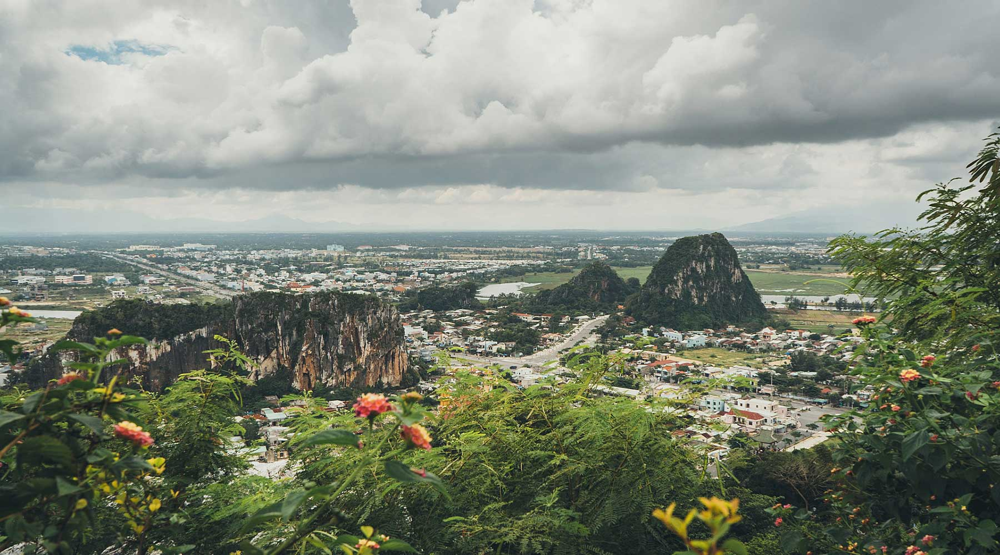

Núi Ngũ Hành Sơn
Địa Điểm Du Lịch Khám Phá
Đà Nẵng nổi tiếng với nhiều phong cảnh tự nhiên đẹp, với những cây cầu bắc qua sông Hàn, với những nét đẹp văn hóa con người an nhiên, hiếu khách và nhiệt tình. Một trong những điểm làm nên thương hiệu Đà Nẵng phải kể đến “ Nam thiên danh thắng” Ngũ Hành Sơn. Hầu hết du khách khi đến Đà Nẵng đều muốn ghé thăm Ngũ Hành Sơn. Không gian nơi đây huyền ảo, thơ mộng, đền chùa và hang động, cây cỏ, sóng vỗ … đã làm cho Ngũ Hành Sơn trở thành cõi thiên thai dành cho du khách.

Ngũ Hành Sơn nằm cách trung tâm Đà Nẵng khoảng 8 km về phía đông nam, trên một bãi cát mênh mông gần bờ biển, thuộc làng Hoà Khuê, ấp Sơn Thủy, huyện Hòa Vang quận Ngũ Hành Sơn. Ngũ Hành Sơn gồm năm ngọn núi 5 núi đá vôi nhô lên trên bãi cát ven biển: Kim Sơn, Mộc Sơn, Thuỷ Sơn, Hoả Sơn và Thổ Sơn, Ngũ Hành Sơn. Đây là một kiệt tác của thiên nhiên ban tặng cho thành phố Đà Nẵng. Nhìn từ trên cao Ngũ Hành Sơn giống như một bàn tay của Trời ấn định nơi đây là vùng đất thiêng.
Theo truyền thuyết của người Chăm, thuở xa xưa có một lão ngư ở phương Bắc bị đắm thuyền trôi dạt đến sống giữa bãi cát mênh mông bên bờ biển. Một hôm, lão ngư thấy một con giao long rất lớn đến đây đẻ trứng. Bỗng từ đâu một con rùa vàng hiện lên, tự xưng là thần Kim Quy, đào cát vùi quả trứng xuống, rồi giao cho ông lão một cái móng chân của mình, và dạy cách trông coi trứng rồng. Nhờ có móng rùa thần, mà ngư ông đã ngăn chặn được diều hâu và các loài thú dữ đến xâm phạm nơi ấp trứng. Sau đó, quả trứng ngày một lớn dần. Cho đến một hôm, trứng nở ra một thiếu nữ xinh đẹp và vỏ trứng tách thành năm mảnh, trở thành năm ngọn: Kim, Mộc, Thủy, Hỏa, Thổ. Vua Chăm nghe được câu chuyện ấy liền cưới thiếu nữ làm vợ, còn Thần Kim Quy thì chở ông lão lên trời.

Gần 200 năm trước, vua Minh Mạng đã từng đến đây. Ông đã tự mình đặt tên cho núi, cho các hang động, chùa chiền. Không ai biết những cái tên như Ngũ Hành Sơn, Huyền Không, Hóa Nghiêm, Lăng Hư, Tàng Chân, Vân Nguyệt, Thiên Long… đã làm nhà vua phải suy nghĩ mất hết biết bao nhiêu thời gian. Nhưng có một điều chắc chắn rằng, giữa những lo toan quốc kế dân sinh, trong tâm hồn của con người này, cảnh trí Ngũ Hành Sơn đã chiếm một phần quan trọng như một nỗi tự hào về một miền đất xinh đẹp. Nơi đây, các dấu ấn văn hoá lịch sử còn in đậm trên mỗi công trình chùa, tháp đầu thế kỷ XIX, trên mỗi tác phẩm điêu khắc Chàm của thế kỷ XIV, XV. Những bút tích thi ca thời Lê, Trần còn in dấu trên các vách đá rêu phong trong các hang động. Những di tích văn hoá lịch sử như mộ mẹ tướng quân Trần Quang Diệu, đền thờ công chúa Ngọc Lan (em gái vua Minh Mạng), bút tích sắc phong quốc tự còn lưu giữ tại chùa Tam Thai của triều Nguyễn, đến các di tích lịch sử đấu tranh cách mạng như Địa đạo núi đá Chồng, hang Bà Tho, núi Kim Sơn, hang Âm Phủ,… Tất cả chứng minh hùng hồn về một Ngũ Hành Sơn huyền thoại, về một vùng đất địa linh nhân kiệt đầy chất sử thi.
KHÁM PHÁ 5 NGỌN NÚI TRONG NÚI NGŨ HÀNH
Những ngọn núi này bao bọc quanh mình nó rất nhiều những huyền thoại khác nhau. Không gian thơ mộng của cảnh trí và vẻ bãng lãng cổ tích của những câu chuyện cổ đã mang lại cho Ngũ Hành Sơn cái ý vị mà ít nơi nào có được. Trong tư duy triết học của Trung Hoa, Ngũ hành: Kim, Mộc, Thủy, Hỏa, Thổ là những yếu tố cấu thành vũ trụ. Con số 5 là con số cực kỳ quan trọng trong tư duy và trong đời sống phương Đông. Nhìn như thế, trong sự trùng hợp ngẫu nhiên, 5 ngọn Kim Sơn, Mộc Sơn, Thủy Sơn, Hỏa Sơn, Thổ Sơn tự trong mình nó đã hàm chứa những vẻ kỳ bí dị thường.
Kim Sơn
Kim Sơn nằm ở phía đông nam, bên bờ sông Cổ Cò. Đi thuyền trên sông, du khách có thể ngắm bóng núi, bóng chùa in trên mặt nước phẳng lặng. Tại đây xưa có Bến Ngự, nơi thuyền Vua cập bến mỗi khi du hành Ngũ Hành Sơn. Nay bến xưa không còn nhưng cạnh chùa Quan Âm người ta vừa tìm thấy một cột lim neo thuyền ngày xưa.
Ngay dưới chân ngọn Kim Sơn có một hang động dài hơn 50m, rộng gần 10m, cao khoảng 10 – 15m. Lối vào động là những bậc đá tự nhiên, bên trong là những lớp thạch nhũ bám vào vách núi tạo thành hình tượng Quan Thế Âm Bồ Tát Cao Bằng người thật rất thanh tú. Tượng thạch nhũ này còn sinh động hơn nhờ một lớp nhũ đá lấp lánh như dải kim tuyến phủ từ bờ vai đến gót chân tượng. Dưới chân tượng là một con rồng đang cuộn mình giữa những làn sóng.
Đặc biệt, phía sau Bồ Tát còn có một hình tượng nhỏ hơn trông như Thiện Tài đồng tử và bên trái là hình chim Khổng Tước, hai cánh xoè rộng toả khắp trần động. Có thể nói đây là bức phù điêu tuyệt mỹ mà thiên nhiên đã ban cho Kim Sơn. Sau khi phát hiện ra động (1950), hoà thượng Thích Pháp Nhãn đã cho mở rộng lối vào động và xây dựng chùa Quán Thế Âm. Chùa dựa lưng vào ngọn Kim Sơn, ngoảnh mặt ra khúc sông đầy hoa sen thơm ngát. Hàng năm vào mùa lễ hội đầu xuân (19/2 âm lịch), chùa mở hội lấy tên là Hội Quán Âm.
Mộc Sơn
Mộc Sơn nằm ở phía đông, sát biển, gần hòn Thuỷ Sơn. Phía đông và nam là động cát, phía bắc là ruộng và phía tây là xóm làng. Tuy thuộc hành Mộc nhưng tại đây lại rất ít cây cối. Đỉnh núi đá bị xẻ thành những răng cưa giống như cái mồng gà trống nên có thể vì vậy mà còn có tên núi Mồng Gà.
Trên hòn núi này không có chùa chiền, chỉ có một khối đá cẩm thạch màu trắng trông tựa người đang ngồi. Người địa phương gọi là Cô Mụ hay Bà Quan Âm. Dưới chóp núi 10m có một kẻ đá rộng chạy ngang phía nam.Trong núi có một động nhỏ, tương truyền ngày xưa có một người đàn bà tên là Trung tu ở đó nên có tên là động Bà Trung. Trong hai cuộc kháng chiến chống Pháp và chống Mỹ cán bộ và nhân dân địa phương thường vào đây để tránh máy bay địch.
Thủy Sơn
Thuỷ Sơn nằm ở phía đông bắc là núi đẹp nhất, du khách thường đến ngoạn cảnh gọi là Chùa Non Nước, phong cảnh hữu tình có thể nói núi Thủy sơn nằm dài từ đông sang tây rộng 15 ha, có nhiều Chùa được xây cất lâu đời, có động Thạch nhũ, có hai chùa đẹp chùa Tam Thai và chùa Linh Ứng, đường lên núi làm bằng từng cấp lót đá, trên đỉnh 3 ngọn núi mang tên là "Tam Thai" bởi vì nó giống như "Sao Tam Thai" tức là 3 ngôi sao làm thành cái đuôi của chùm sao Đại Hùng Tinh. Du khách từ vùng biển muốn lên thăm Linh Ứng phải bước lên khoảng 108 tầng cấp, nếu đến chùa Tam Thai nằm ở phiá nam phải đi xa hơn những tầng cấp dài 156 bậc. Ngày nay phần lớn du khách đến Thuỷ sơn bằng xe từ đường Huyền Trân, hai bên đường là làng chuyên về nghề điêu khắc tạc tượng, bằng đá cẩm thạch
Hỏa Sơn
Hoả Sơn gồm 2 ngọn và một đường đá nhô lên nối liền chúng với nhau. Ngọn phía tây gần Kim Sơn là Dương Hoả Sơn, nằm trên bờ sông Cổ Cò. Ngày xưa, khi Đà Nẵng và Hội An còn giao lưu bằng đường thuỷ, ở đây có một ngã ba sông, ghe thuyền qua lại vô cùng tấp nập.
Trên sườn núi phía tây, mặt hướng về phía bắc, đối diện với Kim Sơn có lớn xuất hiện vùng vẫy trên bãi cát và một quả 3 chữ Hán rất to được khắc vào vách đá “Dương Hoả Sơn”. Trong núi Dương Hoả Sơn có các hang và chùa Phổ Sơn Đà. Còn ngọn ở phía đông, gần đường đi Hội An là Âm Hoả Sơn với chóp núi nhô cao, sườn núi có nhiều thớ đá nằm nghiêng và chạy ngang tạo thành lát cắt, mỏm núi phía đông có một hang đá thông từ sườn phía nam ra sườn phía bắc. Cây cối mọc xen dày ở các kẽ đá.
Cảnh đẹp núi Ngũ Hành Sơn
Chùa Linh Ứng
Đã đến Ngũ Hành Sơn thì không thể bỏ qua ngôi chùa Linh Ứng trên ngọn Thuỷ Sơn. Được đặt ở vị trí trang trọng chính giữa chùa là tượng phật Thích Ca cao 10m với hai bên thờ Quan Thế Âm Bồ Tát và Bồ Tát Địa Tang. Nơi đây không chỉ thu hút nhiều du khách yêu thích du lịch tâm linh mà còn là nơi bạn có thể đắm mình vào chốn bình yên nơi cửa Phật và tránh xa nơi thị thành ồn ào náo nhiệt.
Chùa Tam Thai
Chùa Tam Thai cũng là một ngôi chùa lớn được nhiều du khách chọn thăm quan. Chùa có 3 cổng và theo văn hoá đạo Phật thì cổng chính được dành cho các sư thầy đi, còn lại cổng bên phải là của nữ qua, bên trái là của nam qua. Qua thời gian và chiến tranh, chùa đã được tu sửa nhiều lần nhưng vẫn giữ lại được nhiều nét kiến trúc Phật giáo cổ.
Động Huyền Không
Động Huyền Không là sở hữu phong cảnh đẹp nhất trong các động ở Ngũ Hành Sơn. Động nằm lộ thiên và có cấu trúc vô cùng độc đáo ấn tượng với các vòm hình tròn thông ra bên ngoài nên luôn tràn ngập áng sáng. Không chỉ đến để thăm quan, khách đến đây thường hoà mình vào không gian linh thiêng để cảm thấy tịnh tâm, thư thái.
Lưu ý:
+ Vì có nhiều đền chùa linh thiêng nên khi đi thăm quan Ngũ Hành Sơn, bạn hãy chú ý ăn mặc lịch sự, gọn gàng, nên mặc áo có tay, quần hoặc váy dưới đầu gối.
+Bạn có thể mang thêm nước uống và đồ ăn để phòng đói nhưng hãy nhớ vứt rác đúng chỗ và giữ gìn vệ sinh chung nhé!